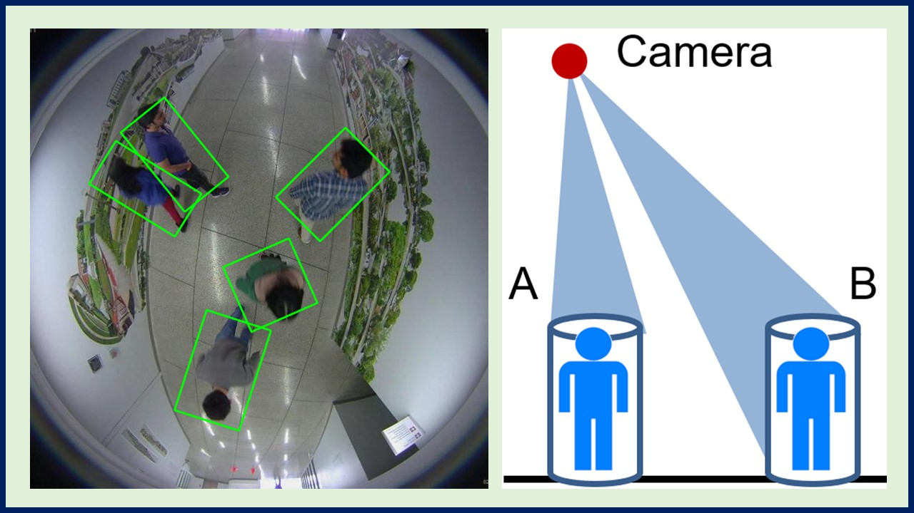
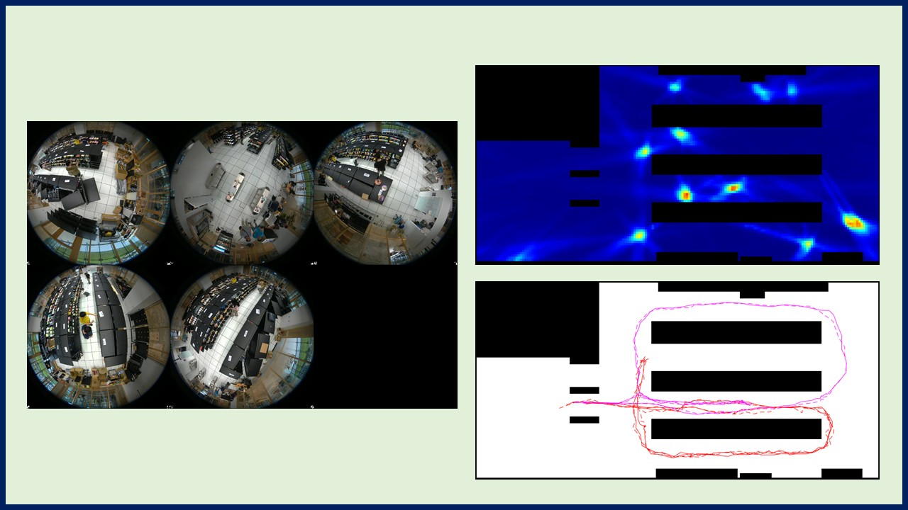
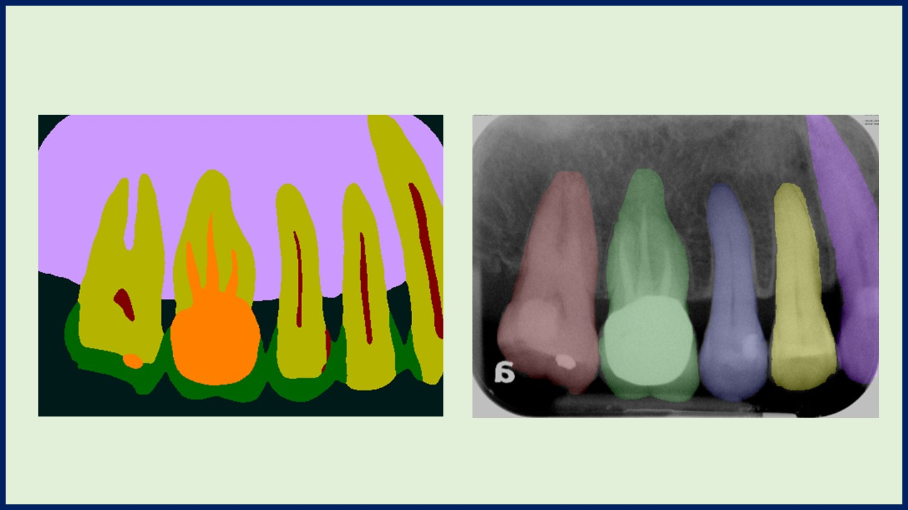
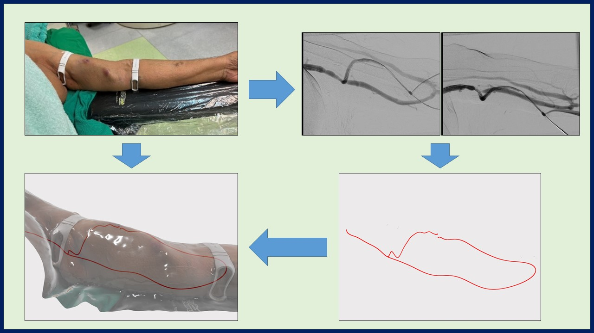
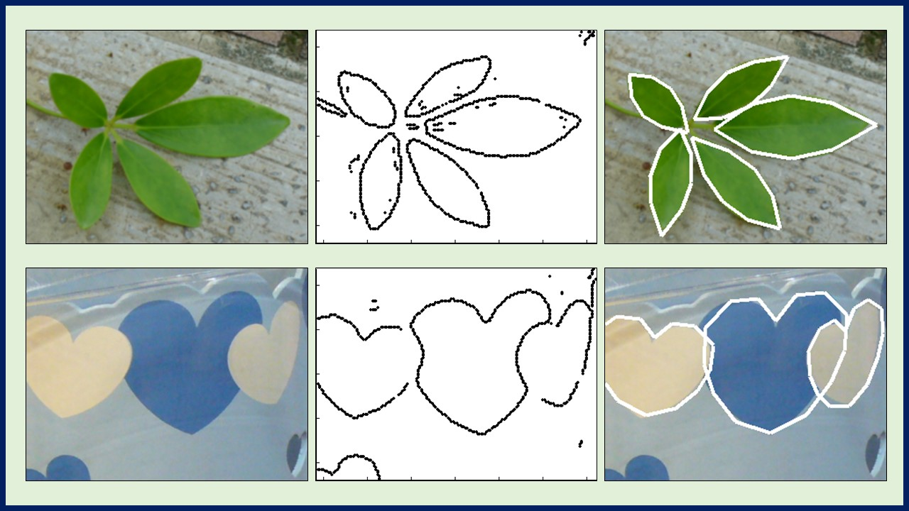
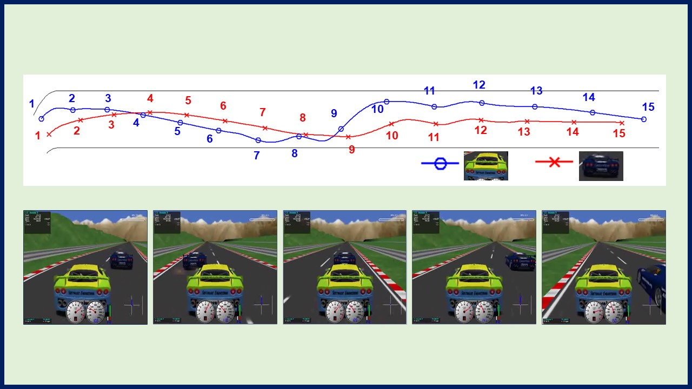

People detection and analysis in top-view fisheye camera images

We extend existing people detection and segmentation methods to top-view fisheye camera images. More recent projects include pose and action recognitions in such images.
Selected publications:
Sheng-Ho Chiang, Tsaipei Wang, Yi-Fu Chen (2021, Jan). Efficient pedestrian detection in top-view fisheye images using compositions of perspective view patches. Image and Vision Computing.LINK
Tsaipei Wang, Yun-Yi Hsieh, Fong-Wen Wong, Yi-Fu Chen (2019, Nov). Mask-RCNN based people detection using a top-view fisheye camera. 2019. International Conference on Technologies and Applications of Artificial (TAAI).LINK
Tsaipei Wang, Chia-Wei Chang, Yu-Shan Wu (2017, Nov). Template-Based People Detection Using A Single Downward-Viewing Fisheye Camera. IEEE International Symposium on Intelligent Signal Processing and Communication Systems (ISPACS).LINK
People tracking with a top-view fisheye camera network

This is an extension of single fisheye camera people detection and tracking. Most of the results are based on a simulated checkout free store. This project originated from collaboration with Industrial Technology Research Institute (ITRI).
Selected publications:
Tsaipei Wang, Sheng-Ho Chiang. Online pedestrian tracking using a dense fisheye camera network with edge computing. IEEE International Conference on Image Processing (ICIP), 2023.LINK
Tsaipei Wang, Chih-Hao Liao, Li-Hsuan Hsieh, Arvin Wen Tsui, Hsin-Chien Huang. People detection and tracking using a fisheye camera network. IEEE International Conference on Visual Communications and Image Processing (VCIP), 2021.LINK
Tsaipei Wang, Chih-Hao Liao. People detection in downward-viewing fisheye camera networks using fuzzy integral. IEEE International Conference on Fuzzy Systems (FUZZIEEE), 2019.LINK
Dental X-ray analysis

The objectives are the detection of dental caries and periodontal decease using routine dental x-ray images. This project is a collaboration with Kaohsiung Medical University Hospital.
Selected publications:
Yu-Chi Chen, Chiu-Yang Lee, Tai-Wei Chen, Jie-Shi Tsai, Tsaipei Wang (2024, Jul). 3D Vessel Visualization Techniques for Dialysis Fistulae. 46th Annual International Conference of the IEEE Engineering in Medicine and Biology Society.LINK
AR visualization of dialysis fistulae

The integrated presentation of the vascular centerline obtained by multi-angle X-ray angiography and the external 3D scanning results. The localization accuracy is evaluated by using a metal as a simulated blood vessel. The error is less than the diameter of the blood vessel, which has practical value.
Selected publications:
Yu-Chi Chen, Chiu-Yang Lee, Tai-Wei Chen, Jie-Shi Tsai, Tsaipei Wang (2024, Jul). 3D Vessel Visualization Techniques for Dialysis Fistulae. 46th Annual International Conference of the IEEE Engineering in Medicine and Biology Society.LINK
Temporomandibular disorder diagnosis
The integrated presentation of the vascular centerline obtained by multi-angle X-ray angiography and the external 3D scanning results. The localization accuracy is evaluated by using a metal as a simulated blood vessel. The error is less than the diameter of the blood vessel, which has practical value.
CPA is a fungal infection of the lungs that can be confused with other diseases. Our work includes the analysis of Chest X-ray and CT images to detect features indicative of CPA. This project is a collaboration with Taipei Veterans General Hospital.
Selected publications:
Yu-Chi Chen, Chiu-Yang Lee, Tai-Wei Chen, Jie-Shi Tsai, Tsaipei Wang (2024, Jul). 3D Vessel Visualization Techniques for Dialysis Fistulae. 46th Annual International Conference of the IEEE Engineering in Medicine and Biology Society.LINK
Past Research
Shell clustering algorithms

We developed shell clustering algorithm using template-based prototypes and alternating optimization. We were the first to apply shell clustering to such data. The latest achievement is to cluster highly elastic templates, which further breaks through the shape limitations that could be used for object detection in the past and can be used to detect objects with different degrees of deformation.
Selected publications:
Tsaipei Wang, Wen-Liang Hung (2016, Jul). A generalized possibilistic approach to shell clustering of template-based shapes. Journal of Statistical Computation and Simulation, 87(3), 423-436.LINK
Tsaipei Wang (2016, Jul). A Flexible Possibilistic C-Template Shell Clustering Method with Adjustable Degree of Deformation. IEEE International Conference on Fuzzy Systems (FUZZ-IEEE).LINK
Tsaipei Wang. Template-based shell clustering using a line-segment representation of data, 2011.LINK
Tsaipei Wang. Possibilistic shell clustering of template-based shapes. IEEE Transactions on Fuzzy Systems, 2008.LINK
Ensemble clustering algorithms
While many clustering algorithms generate results that are affected by noise, initialization, etc., ensemble clustering has the potential to yield more stable and reliable clusters by combining multiple partitions generated by simple algorithms. The diversity of the individual partitions can come from different views, data subsets, initializations, and so on. Our work mainly focused on ensemble clustering methods based on co-association matrices.
Selected publications:
Tsaipei Wang. CA-Tree: A hierarchical structure for efficient and scalable coassociation-based cluster ensembles. IEEE Transactions on Systems, Man, and Cybernetics, Part B (Cybernetics), 2010.LINK
Tsaipei Wang. Comparing hard and fuzzy c-means for evidence-accumulation clustering. IEEE International Conference on Fuzzy Systems (FUZZIEEE), 2009.LINK
Simulated car racing games

We studied various topics related to simulated car racing games, including optimization methods for driving behaviors as well as recognition and emulation of human players.
Selected publications:
Han-Hsien Huang, Tsaipei Wang (2015, Sep). Learning Overtaking and Blocking Skills in Simulated Car Racing. 2015 IEEE Conference on Computational Intelligence and Games (CIG)LINK
Tsaipei Wang, Keng-Te Liaw (2014, Jun). Driving Style Imitation in Simulated Car Racing Using Style Evaluators and Multi-objective Evolution of a Fuzzy Logic Controller. IEEE 2014 Conference on Norbert Wiener in the 21st Century.LINK
Jia-Hao Hou, Tsaipei Wang. The development of a simulated car racing controller based on monte-carlo tree search. IEEE Conference on Technologies and Applications of Artificial Intelligence (TAAI), 2016.LINK
Landmine detections
These are works done as a postdoctoral fellow in the University of Missouri-Columbia. The research focused on the processing of acoustic and synthetic aperture radar signals.
Selected publications:
Tsaipei Wang, James M Keller, Paul D Gader, Ozy Sjahputera. Frequency subband processing and feature analysis of forward-looking ground-penetrating radar signals for land-mine detection. IEEE Transactions on Geoscience and Remote Sensing, 2007.LINK
Tsaipei Wang, Ozy Sjahputera, James M Keller, Paul D Gader. Landmine detection using forward-looking GPR with object tracking. SPIE Detection and Remediation Technologies for Mines and Minelike Targets X, 2005.LINK
Tsaipei Wang, Ozy Sjahputera, James M Keller, Paul D Gader. Feature analysis for forward-looking landmine detection using GPR. SPIE Detection and Remediation Technologies for Mines and Minelike Targets X, 2005.LINK
Tsaipei Wang, James M Keller, Paul D Gader, A Koksal Hocaoglu. Phase signatures in acoustic-seismic land mine detection. Radio Science, 2004.LINK
Robert Luke, James M Keller, Paul D Gader, Marjorie Skubic, Tsaipei Wang. Experiments in tripwire detection using visible and near-IR imagery. SPIE Detection and Remediation Technologies for Mines and Minelike Targets IX, 2004.LINK
Tsaipei Wang, James M Keller, Paul D Gader, Gerhard X Ritter, Ali Koksal Hocaoglu, Mark S Schmalz. Model-based landmine detection algorithms for acoustic/seismic data. SPIE Detection and Remediation Technologies for Mines and Minelike Targets VIII, 2003.LINK
Selected additional works and publications
Fang-Ju Lin, Tsai-Pei Wang. Metric learning for weather image classification. Multimedia Tools and Applications, 2018.LINK
Yen-Chia Chiu, Li-Yi Liu, Tsaipei Wang. Automatic segmentation and summarization for videos taken with smart glasses. Multimedia Tools and Applications, 2018.LINK
Tsaipei Wang. Iterative data-driven coronary vessel labeling. IEEE International Workshop on Machine Learning for Signal Processing (MLSP), 2017.LINK
Jau-hong Kao, Jen-hui Chuang, Tsaipei Wang. Chromosome classification based on the band profile similarity along approximate medial axis. Pattern Recognition, 2008.LINK
Chia-Lin Ko, Horng-Shyang Liao, Tsai-Pei Wang, Kuang-Wei Fu, Ching-Yao Lin, Jung-Hong Chuang. Multi-resolution volume rendering of large time-varying data using video-based compression. IEEE Pacific Visualization Symposium, 2008.LINK
Tsaipei Wang, James M Keller, Gerhard Cibis. A fuzzy approach to find Hirschberg points and to determine fixation in digital images of infants. IEEE International Conference on Fuzzy Systems (FUZZIEEE), 2003.LINK